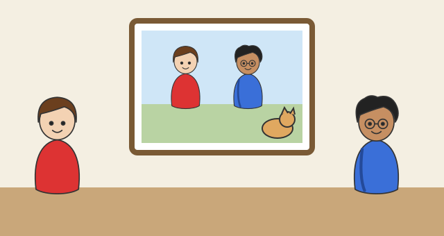

Das Verb être
Mit einem KI-Tutor lernen
Ein KI-Tutor erklärt dir diese Seite und hilft dir bei den Übungen. Wähl deinen Assistenten:
Mit Claude öffnen Mit ChatGPT öffnen Mit Mistral Vibe öffnen
Du nutzt dein eigenes Konto beim Anbieter. Der Assistent ist kein Angebot von lernapps.net: lernapps liefert nur Inhalte und Übungen. Die Wahl gilt für alle Seiten, nur auf diesem Gerät.
Worum es geht

Léa (links) zeigt Malik (rechts) ein Foto von ihnen beiden und der Katze. Findest du die Katze?
Quelle: eigene Zeichnung. Lizenz: CC-BY-4.0.Auf der Seite „Wer macht was?“ hast du die Pronomen gelernt. Jetzt brauchen sie ein Wort, das mit ihnen zusammenarbeitet. Léa zeigt Malik ein Foto und sagt, wer darauf ist und wo alle sind. Dafür braucht sie das wichtigste Wort überhaupt: être, auf Deutsch „sein“.
Danach kannst du: être mit allen Pronomen verwenden und mit c'est und il est sagen, wer oder was etwas ist und wo jemand ist.
Neu: So lautet être
- Verb
Ein Verb sagt, was jemand tut oder ist, zum Beispiel „spielen“ oder „sein“. Es verändert sich mit dem Pronomen.
| Pronomen | Form |
|---|---|
| je | suis |
| tu | es |
| il / elle / on | est |
| nous | sommes |
| vous | êtes |
| ils / elles | sont |
Zwei kleine Wörter helfen dir auf dem Foto, wenn du etwas sagen willst:
- c'est stellt etwas vor: C'est Léa. (Das ist Léa.) C'est le chat. (Das ist die Katze.)
- il est / elle est sagt etwas über jemanden, zum Beispiel wo er oder sie ist: Elle est ici. (Sie ist hier.) Il est à l'école. (Er ist in der Schule.)
Du kannst es dir so merken: Erst zeigst du mit c'est auf jemanden, dann sagst du mit il est oder elle est mehr über ihn oder sie.
Merke
Lerne jede Form mit dem Pronomen davor: je suis, tu es, il est. Zu nous gehört sommes, zu vous gehört êtes, zu ils und elles gehört sont.
Kurz geübt
Übung
Lösung
C'est le chat. richtige Antwort
Richtig: Mit c'est stellst du jemanden oder etwas vor. „Das ist die Katze.“
Il est le chat.
il est sagst du, um mehr über jemanden zu sagen, zum Beispiel wo er ist. Zum Vorstellen nimmst du c'est.
Je suis le chat.
Je suis heißt „ich bin“. Léa ist aber nicht die Katze!
Nous sommes le chat.
Nous sommes heißt „wir sind“. Die Katze ist nur eine.
Zum Vorstellen sagst du c'est: C'est le chat.
Mehr dazu:
Hören und nachsprechen
Léa sagt Je suis Léa. und Nous sommes à l'école., Malik sagt Tu es Malik. und C'est le chat. Höre zu, nimm dich selbst auf und vergleiche. Dann bewertest du dich selbst.
Übung
Hör zu, sprich nach und nimm dich auf. Vergleiche dann mit dem Original.
Tipp
Sprich die Formen von être langsam und deutlich nach.
- Je suis Léa.KI
- Tu es Malik.KI
- C'est le chat.KI
- Nous sommes à l'école.KI
Zum Aufnehmen braucht diese Übung JavaScript. Die Beispiele kannst du auch ohne anhören.
Lösung
- Je suis Léa.
- Tu es Malik.
- C'est le chat.
- Nous sommes à l'école.
Übung
Übung
Lösung
Richtige Antwort: je – suis; tu – es; on – est; vous – êtes; ils – sont
je suis, tu es, on est, vous êtes, ils sont. Die Form sommes gehört zu nous.
Mehr dazu:
Übung
Schreibe die fehlenden Formen von être.
| Pronomen | Form |
|---|---|
| je | … |
| tu | … |
| il / elle | … |
| nous | … |
| vous | … |
| ils / elles | … |
Lösung
- je · suis
- tu · es
- il / elle · est
- nous · sommes
- vous · êtes
- ils / elles · sont
Übung
Wähle die passende Form von être.
- Ich bin Malik. → Je … Malik.
- Seid ihr hier? → Vous … ici ?
- Sie sind in der Schule. → Ils … à l'école.
- Wir sind hier. → On … ici.
Lösung
- Je suis Malik.
- Vous êtes ici ?
- Ils sont à l'école.
- On est ici.
Übung
c'est oder il est / elle est? Wähle das passende Wort.
- Das ist Léa. → … Léa.
- Sie ist hier. (Léa) → … ici.
Lösung
- C'est Léa.
- Elle est ici.
Übung
Höre den Satz und schreibe ihn auf. Du kannst ihn so oft hören, wie du magst.
- KI
- KI
- KI
Lösung
- Je suis Malik.
- Il est ici.
- Ils sont à l'école.
Übung
Schreibe den Satz auf Französisch.
- Ich bin Léa.
- Du bist hier.
- Das ist Malik.
Lösung
- Je suis Léa.
- Tu es ici.
- C'est Malik.